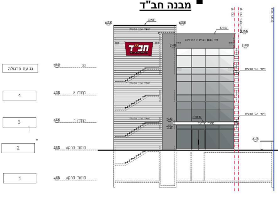

נותר שטח ציבורי פנוי אחרון בשכונה שלנו, ובו העירייה מתכננת להקים 2 בתי כנסת (בתכנון הראשוני כל אחד קומותיים אך ראינו תוכניות ל-4 קומות, כולל מקום לאירועים, סה"כ 1000 מ"ר).
אנחנו מאמינים שישנן אפשרויות שיותר יתאימו לצביון השכונה ולצרכי התושבים, כדוגמת טיפת חלב / חניה / פארק עם צמחייה / אזור עבודה משותף וכד'.
חב"ד הגישו בקשה לבנות 4 קומות של מרכז דתי שיכלול חדרי לימוד, אולם אירועים וחנות, וזה בלי קשר לעוד בית כנסת ספרדי צמוד ולמרות ההבטחה לבית כנסת קטן שכונתי. זה הזמן שלנו להתנגד! אם לא נעשה את זה עכשיו זה יהיה מאוחר מדי! לכן הוחלט לגייס עורך דין בדחיפות האפשרית. *נחוצה השתתפותכם הכספית* בעלות סמלית של 100 ש"ח לפחות, מכל דייר בשכונה.
אנחנו מחפשים מתנדבים לוועד הפעיל. נשמח לצרף לצוות עורכי דין, מהנדסי בנייה או אדריכלים, מנהלי קמפיין דיגיטלי, או כל אחד שעתיד השכונה וצביונה חשוב לו ורוצה להצטרף למאבק.
הסבר על הגיוס
יעד הגיוס של 100,000 ש"ח הוא לצרכי המאבק המשפטי. זהו סכום שנדרש למאבקים דומים.
חשוב לומר שועד הפעולה פועל בהתנדבות מלאה. אנו תושבים כמוכם, שמעוניינים בטובת השכונה, ומזמינים אתכם להצטרף אלינו בשמחה כדי לקבוע את עתידה של השכונה שאנחנו כל כך אוהבים.
סכום מומלץ להשתתפות בעתירה: 300 ש"ח. אם 10% מבתי האב בשכונה יתגייסו למאבק בסכום זה נוכל להגיע ליעד הגיוס. זהו סכום חד פעמי, פחות מדמי ועד בית לחודש.
דרך מאבק זה, העירייה תבין שאנחנו לא גורם שניתן להתעלם ממנו עוד, גם לעניינים עתידיים 💪
1. קיימנו שיחה עם עורכי הדין ומסתמן כי הדרך לשנות את ההקצאה היא הדרך המשפטית.
2. ניסיונות הידברות, בקשות לשימוש מעורב, הצדקת הצרכים ומאות ההתנגדויות שהוגשו בעבר - לא הניבו פרי.
3. לפיכך, על מנת שנוכל לנצל את השטח הציבורי האחרון בשכונה בצורה מטיבית לכלל התושבים, הפתרון הוא לפנות לערכאות משפטיות.
כיום מתנהלים הליכים דומים
ברחובות ההולנדית,
אחוזת הנשיא והתנהל בעבר מאבק מוצלח בשדרות חן.
התחלנו בגיוס הכספים!
תוכניות הבניה של אחד מבתי הכנסת רב הקומות (בניגוד להבטחות):
